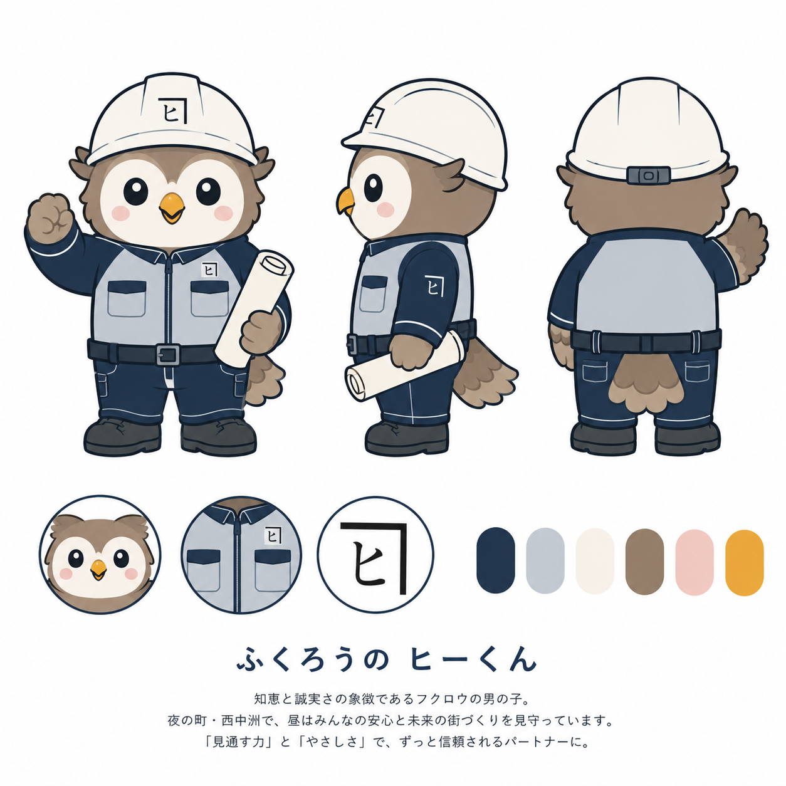
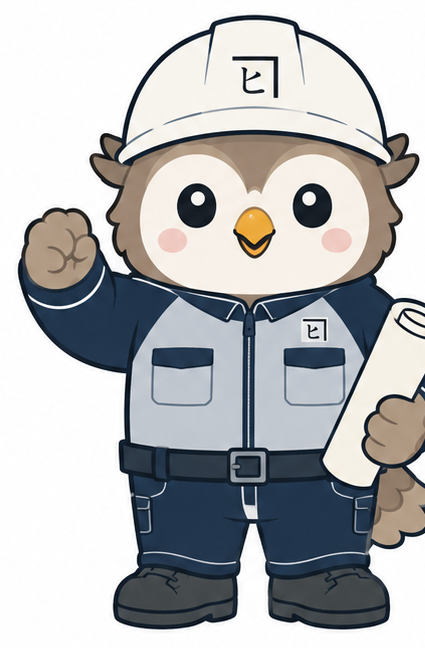
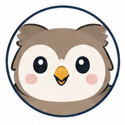
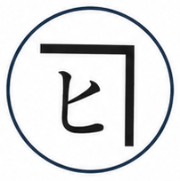

株式会社西中洲樋口建設 公式キャラクター（採用案）
小サイズ・モノクロ・濃色背景での見え方をここで確認できます。設定はこのフォルダの README.md にあります。




#23374F#C4CAD1#F6F0E9#947F6B#F0C8C0#E9A73C#484C4F#091624
切り出し画像について：「全身」「顔アイコン」「ロゴマーク」は、キャラクターシートから機械的に切り出したものです。あくまで検討用で、背景は白のままです（透過ではありません）。
実務で使う前に、イラストレーターにベクター化（AI/EPS）・透過PNG・1色版・線画版の作成を依頼してください。詳細は README.md の「6. これからやること」を参照。